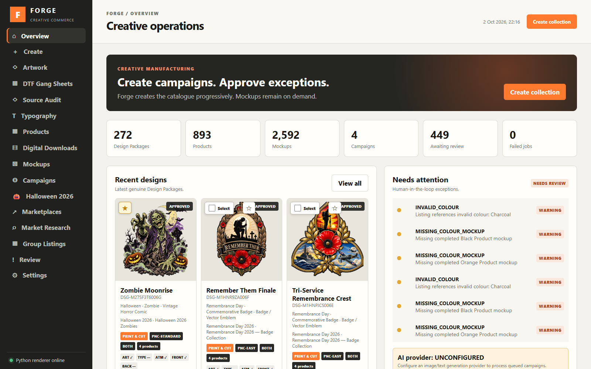
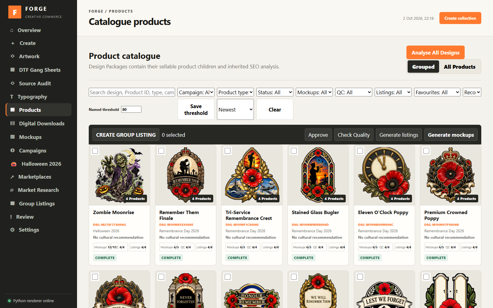
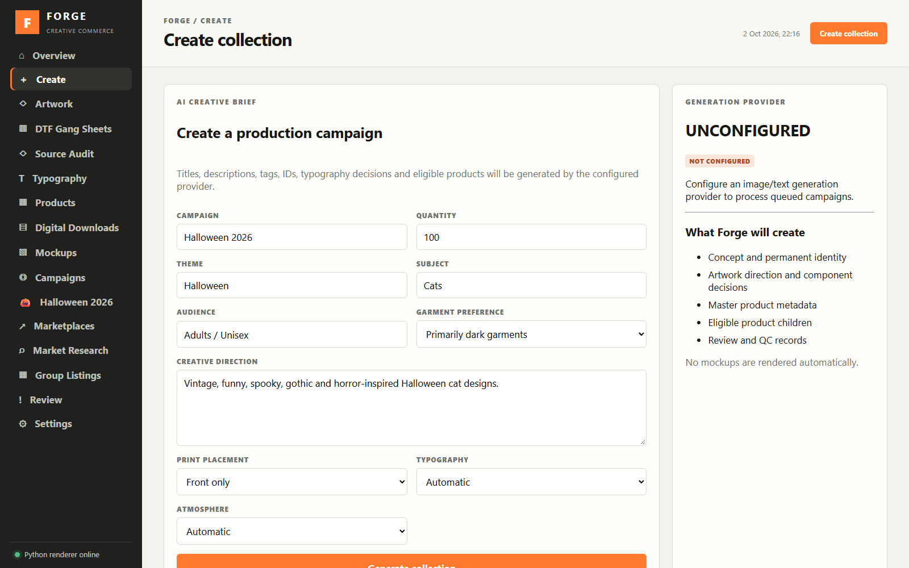
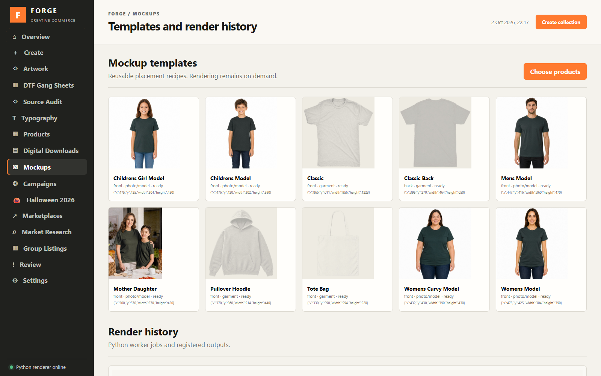
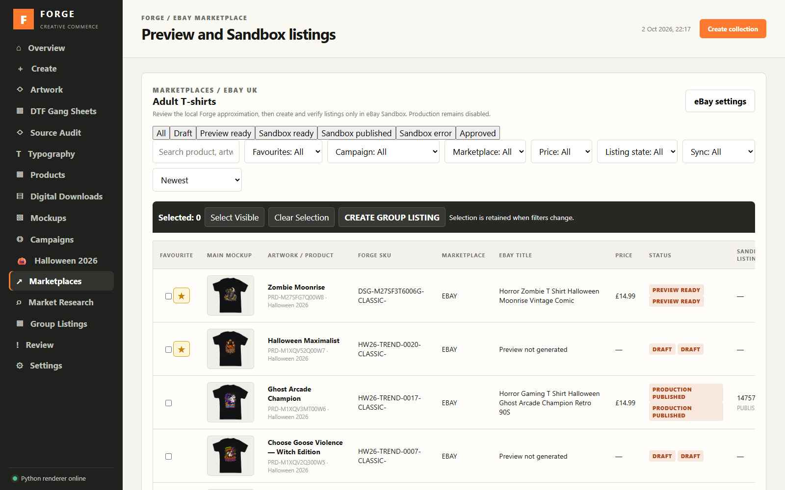
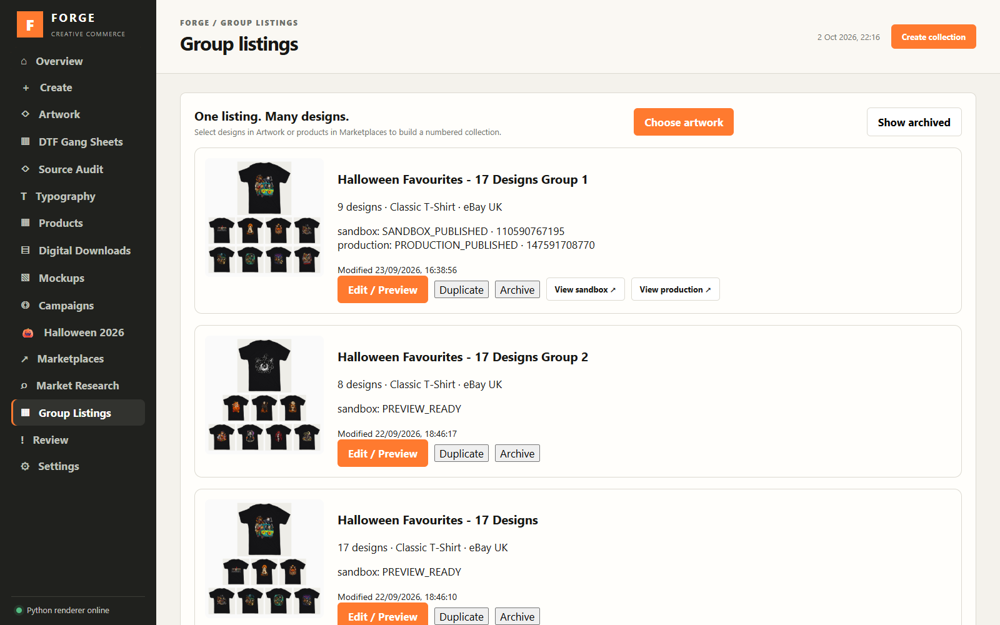
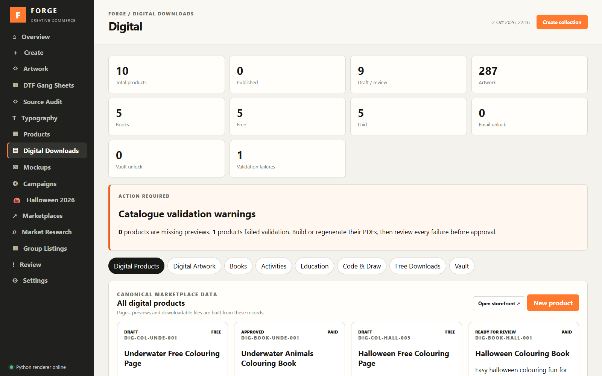
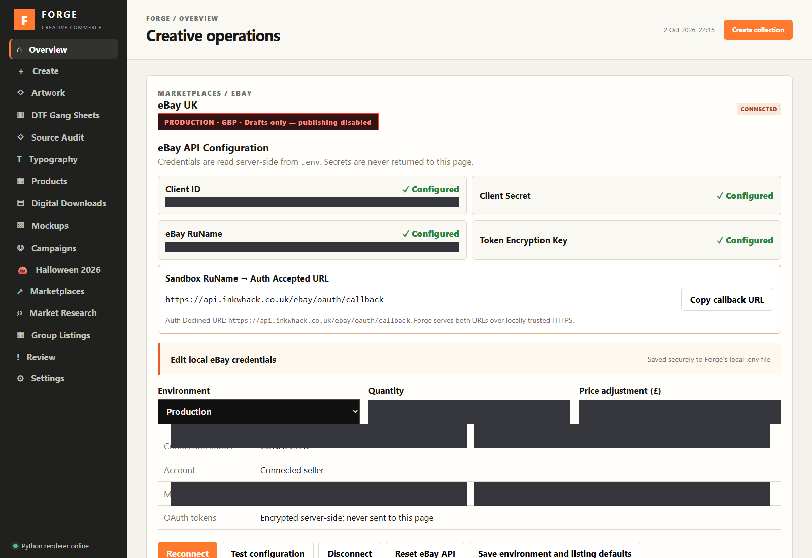

The creative commerce workspace
The ForgeFrom artwork
to marketplace.
Under development · The Forge is currently used privately. This page is a screenshot showcase; a public live demo is not available.
Bring your designs, products, mockups and listings together. The Forge keeps the creative work connected to the work of selling it.

01 / Create & organise
A home for your artwork.
Import artwork into design packages, organise your catalogue, build product variants and render garment mockups. Keep original designs and finished product images together.




02 / Prepare & manage
Turn the catalogue into listings.
Work with products, digital downloads and grouped listings. Review marketplace-ready content in a workspace built around your designs.



03 / Connect your marketplace
Bring eBay into the workflow.
The marketplace area brings account connections and publishing controls into The Forge. Authorise your eBay account before using its listing tools.
